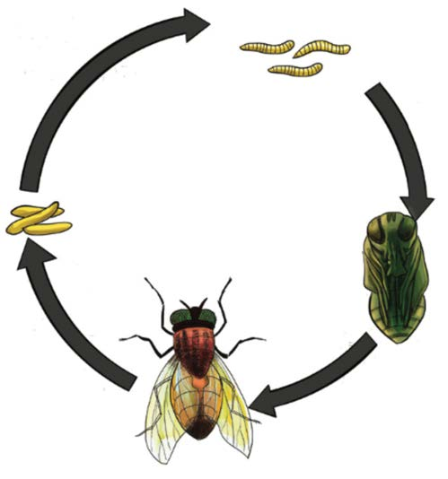

metamorphosis has four stages of development which are egg, larva, pupa and adult. Examples of insects with complete metamorphosis include houseflies and mosquitoes. Incomplete metamorphosis has three development stages which are egg, nymph and adult. This type of metamorphosis occurs in insects like cockroaches and lice.
Life cycle of housefly
The stages of housefly development are egg, larva, pupa, and adult fly. The female housefly lays eggs in dirty places where it can find its food. These places include areas with faeces, food waste, and dead and decayed organisms. Depending on environmental conditions, housefly eggs can hatch into larvae within 24 hours. The larva can develop for about seven days before becoming a pupa. The pupa does not feed and may take about six days to become a fully grown housefly. Refer to Figure 6.

Larvae Eggs Adult Pupa